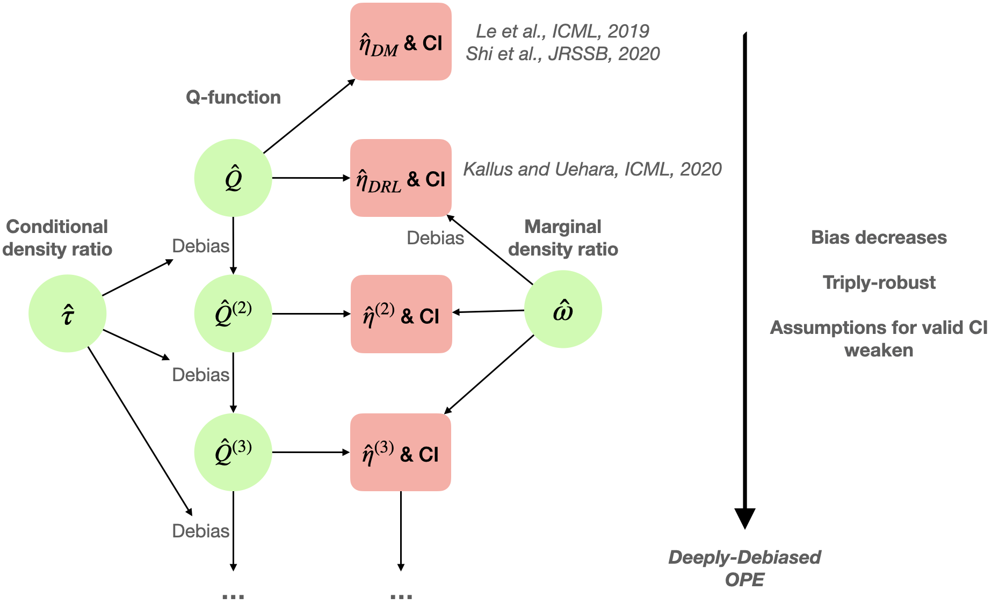

Deeply-Debiased Off-Policy Evaluation
Contents
Deeply-Debiased Off-Policy Evaluation#
The doubly robust utilizes the importance weighting method to reduce the bias of the direct methods. However, in the complicated RL problems, it is still challenging to satisfy the required rate conditions to yield valid inference. In this part, we introduce a deeply-debiasing procedure to provide valid inference under minimal conditions. We present the method in the infinite-horizon setting, under the stationarity assumption introduced in CROSS-REFER, and extensions to other RL setups are straightforward.
Advantages:
Theoretically valid with dependent data
Statistically efficient as it can avoid the curse of horizon and can achieve the semiparametric efficiency bound
Robust to model mis-specifications and slow convergence rates of nuisance estimators
Main Idea#
The validity of the asymptotic distribution of the doubly robust estimator such as DRL and its Wald-type CI requires the two nuisance function estimators, \(\widehat{Q}\) and \(\widehat{\omega}\), to both converge at a rate faster than \((nT)^{-1/4}\). When this assumption is violated, the resulting CI cannot achieve the nominal coverage. These requirements are likely to be violated in complicated RL tasks, given the dimensionality and the complexity of modeling the Q-function and the design function. See [1] for illustrative examples.
The limitation of DRL motivates us to consider constructing a valid CI under weaker and practically more feasible conditions. To achieve this goal, we first take a deeper look at DRL. First recall that \(\widehat{\eta}_{\tiny{\textrm{DRL}}}= (nT)^{-1} \sum_{i=1}^n\sum_{t=0}^{T-1} \psi_{i,t}\), where
Here, the second term on is a plug-in estimator of the value based on the initial Q-estimator, and the first term corresponds to an augmentation term used to de-bias the plug-in value estimator \(\mathbb{E}_{s \sim \mathbb{G}, a \sim \pi(\cdot|s)}\widehat{Q}(a, s)\).
Conditional density ratio. Similarly, we can debias the initial Q-estimator \(\widehat{Q}(a_0,s_0)\) for any \((a_0,s_0)\). Towards that end, we introduce the conditional density ratio. Specifically, by replacing \(\mathbb{G}(\bullet)\) with a Dirac measure \(\mathbb{I}(\bullet=s_0)\) and further conditioning on an initial action \(a_0\), the marginalized density ratio \(\omega(a, s)\) becomes a conditional density ratio, defined as
where \(p_t^{\pi}(a,s|a_0,s_0)\) denotes the probability of \((A_t,S_t)=(a,s)\) following policy \(\pi\) conditional on the event that \(\{A_0=a_0, S_0=s_0\}\). By definition, the numerator corresponds to the discounted conditional visitation probability following \(\pi\) given that the initial state-action pair equals \((s_0,a_0)\).
Debias the Q-function. By replacing \(\widehat{\omega}\) in (1) with some estimated conditional density ratio \(\widehat{\tau}\), we obtain the following estimation function for any \(Q\)-function estimate \(\tilde{Q}\):
Here, we refer to \(\mathcal{D}^{(i,t)}\) as the individual debiasing operator, since it debiases any \(\tilde{Q}\) based on an individual data tuple \((S_{i,t},A_{i,t},R_{i,t},S_{i,t+1})\). Similarly, the augmentation term here is to offer protection against potential model misspecification of the Q-function, and as such, \(\mathcal{D}^{(i,t)}Q(a,s)\) is a doubly robust estimator of \(Q^{\pi}(a,s)\). A debiased version of the Q-estimator is given by averaging \(\mathcal{D}^{(i,t)} \widehat{Q}\) over the data tuples, i.e., \(\widehat{Q}^{(2)}=\frac{1}{nT}\sum_{i \le n}\sum_{0\le t<T}\mathcal{D}^{(i,t)} \widehat{Q}.\) We can prove the bias of \(\widehat{Q}^{(2)}\) will decay at a faster rate than the initial Q-estimator \(\widehat{Q}\).
The two-step debias iteration. Similar with DRL, we can construct an estimating function \(\psi_{i,t}^{(2)}\) for any \((i,t)\) by replacing \(\widehat{Q}\) in (1) with \(\widehat{Q}^{(2)}\). This yields our second-order estimator $\(\widehat{\eta}^{(2)}_{\tiny{\textrm{TR}}}=(nT)^{-1} \sum_{i,t} \psi_{i,t}^{(2)}.\)\( We can establish that the bias of \)\widehat{\eta}^{(2)}{\tiny{\textrm{TR}}}\( decays at a faster rate than the DRL estimator. Moreover, based on the structure of this estimator, we can establish that \)\widehat{\eta}^{(2)}{\tiny{\textrm{TR}}}\( converges to the true value when one model for \)Q^{\pi}\(, \)\omega^{\pi}\( or \)\tau^{\pi}\( is correctly specified. As such, it is *triply-robust*. Finally, let \)\widehat{\sigma}^{(2)} = \Big[(nT-1)^{-1} \sum_{i,t} (\psi_{i,t}^{(2)}-\widehat{\eta}_{\textrm{TR}}^{(2)})^2\Big]^{1/2}\(, an asymptotic \)(1 - \alpha)$-CI is given by
and roughly speaking, its validity only requires the nuisanses to converge at a rate faster than \((nT)^{-1/6}\).
The \(m\)-step debias iteration. To further relax the convergence rate requirement, we can iteratively debias the Q-estimator to construct higher-order value estimates. Specifically, for any order \(m\ge 2\), we iteratively apply the debiasing operator to the initial Q-estimator \(m-1\) times and average over all individual tuples, leading to the following estimator,
where the sum is taken over all possible combinations of disjoint tuples \((i_1,t_1),(i_2,t_2),\cdots,(i_{m-1},t_{m-1})\) in the set \(\{(i,t):i \le n, 0\le t<T\}\). The resulting value estimator \(\widehat{\eta}^{(m)}_{\tiny{\textrm{TR}}}\) and its CI can be similarly constructed as their second-order counterparts. By similar arguments, we can establish that the bias of the Q-estimator and that of the resulting value decrease as the order \(m\) increases. This yields the flexibility and robustness of our estimator as it allows the nuisance function estimator to converge at an arbitrary rate, with large enough \(m\). The efficiency of this method follows from the fact that the estimator can achieve the semiparametric efficiency bound.
Demo [TODO]#
# After we publish the pack age, we can directly import it
# TODO: explore more efficient way
# we can hide this cell later
import os
os.getcwd()
os.chdir('..')
os.chdir('../CausalDM')
---------------------------------------------------------------------------
FileNotFoundError Traceback (most recent call last)
Input In [1], in <cell line: 7>()
5 os.getcwd()
6 os.chdir('..')
----> 7 os.chdir('../CausalDM')
FileNotFoundError: [WinError 2] 系统找不到指定的文件。: '../CausalDM'
References#
Shi C, Wan R, Chernozhukov V, et al. Deeply-debiased off-policy interval estimation[C]//International Conference on Machine Learning. PMLR, 2021: 9580-9591.
Note#
DRL is designed by following the standard approach in semiparametric theory, via first deriving the first-order efficient influence function of \(\eta^{\pi}\) and then constructing the corresponding first-order U-statistic. Our proposal is motivated by the recent breakthroughs on higher-order U-statistics. Specifically, a higher-order U-statistic can be obtained by deriving the higher-order influence functions of \(\eta^{\pi}\), and for a large class of problems, the estimator yields the same asymptotic distribution with the first-order U-statistic under milder conditions. When \(T = 1\), our proposal shares similar spirits to the works on minimax optimal estimation for average treatment effects.
\(\tau^{\pi}\) can be learned from the observed data by solving a minimax problem. See [1] for more details.
Although the proposed estimator is as efficient as DRL in the asymptotic sense, in finite sample, the variance of our estimator will always be larger than DRL. This is due to the fact that, our estimator, as a higher-order U-statistic, can be decomposed into the sum of some asymptotically uncorrelated terms as \(\eta^{\pi}+\sum_{j=1}^m \widehat{\eta}_j\), according to the Hoeffding decomposition. Here, the DRL estimator is asymptotically equivalent to \(\eta^{\pi}+\widehat{\eta}_1\) and \(\widehat{\eta}_j\) corresponds to a \(j\)th order degenerate U-statistic for any \(j\ge 2\). Therefore, the proposed estimator has additional higher order terms. This fact can be regarded as a bias-variance tradeoff.